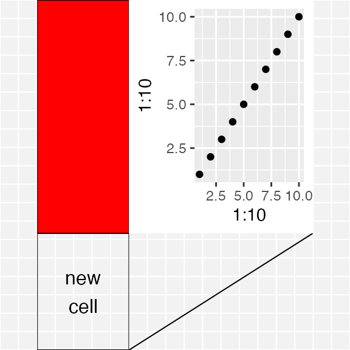
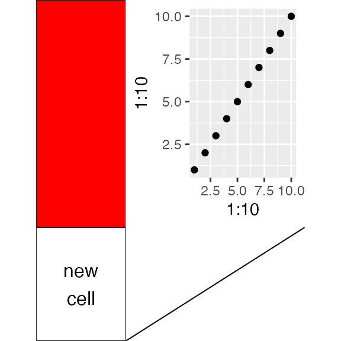
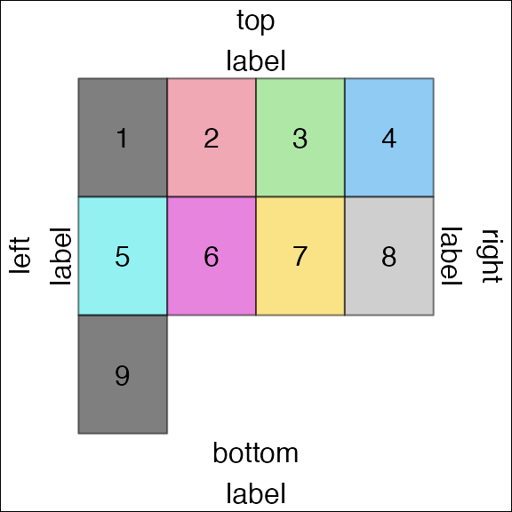
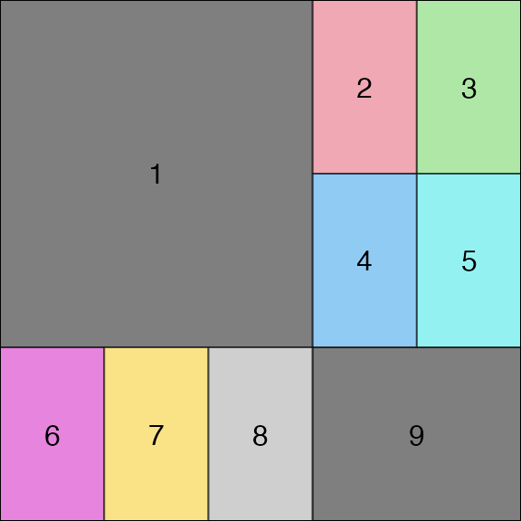

(Unofficial) overview of gtable
Baptiste Auguie
2022-12-11
gtable.RmdThe R package gtable is designed to help construct and
manipulate layouts containing graphical elements. The standard
grid package in R provides low-level functions to define
viewports, and place graphical elements (grobs) at specific locations
within the device window. gtable builds upon these
functions and provides a higher-level interface, where one can
e.g. merge two layouts, add columns, rows, insert graphical elements in
a given cell, and change the display order, among other things.
The gtable package is used internally by
ggplot2, and can therefore be used to modify the layout of
such plots.
Constructing a gtable
A gtable object can be constructed in a variety of
ways,
- Empty table
This is an empty table with 3 rows and one column.
gtable_col and gtable_row provide a simplified
interface for 1 column or 1 row layouts, respectively.
- matrix layout of grobs
a <- rectGrob(gp = gpar(fill = "red"))
b <- grobTree(rectGrob(), textGrob("new\ncell"))
c <- ggplotGrob(qplot(1:10,1:10))
d <- linesGrob()
mat <- matrix(list(a, b, c, d), nrow = 2)
g <- gtable_matrix(name = "demo", grobs = mat,
widths = unit(c(2, 4), "cm"),
heights = unit(c(2, 5), c("in", "lines")))
g## TableGrob (2 x 2) "demo": 4 grobs
## z cells name grob
## 1 1 (1-1,1-1) demo rect[GRID.rect.1]
## 2 2 (2-2,1-1) demo gTree[GRID.gTree.2]
## 3 3 (1-1,2-2) demo gtable[layout]
## 4 4 (2-2,2-2) demo lines[GRID.lines.44]Actual drawing of the gtable on a graphics device is performed with
grid.draw(); note that plot() is only defined
for debugging purposes, it adds a light grey background and thin grid
lines to help visualise the scene in its drawing context.
plot(g)
grid.newpage()
grid.draw(g)
The gridExtra package provides a few conventient constructor functions, e.g.
- based on
grid.arrange
dummy_grob <- function(id) {
grobTree(rectGrob(gp=gpar(fill=id, alpha=0.5)), textGrob(id))
}
gs <- lapply(1:9, dummy_grob)
grid.arrange(ncol=4, grobs=gs,
top="top\nlabel", bottom="bottom\nlabel",
left="left\nlabel", right="right\nlabel")
grid.rect(gp=gpar(fill=NA))
- with a pre-defined layout
gt <- arrangeGrob(grobs=gs, layout_matrix=rbind(c(1,1,1,2,3),
c(1,1,1,4,5),
c(6,7,8,9,9)))
grid.draw(gt)
grid.rect(gp=gpar(fill=NA))
Components of a gtable
Let’s have a closer look at the gtable we created earlier.
print(g)## TableGrob (2 x 2) "demo": 4 grobs
## z cells name grob
## 1 1 (1-1,1-1) demo rect[GRID.rect.1]
## 2 2 (2-2,1-1) demo gTree[GRID.gTree.2]
## 3 3 (1-1,2-2) demo gtable[layout]
## 4 4 (2-2,2-2) demo lines[GRID.lines.44]
names(g)## [1] "grobs" "layout" "widths" "heights"
## [5] "respect" "rownames" "colnames" "name"
## [9] "gp" "vp" "children" "childrenOrder"Other useful characteristics of the gtable are,
## [1] 4## [1] 2## [1] 2where we note the dual nature of a gtable: it looks like a matrix, in the sense that it defines a rectangular table of nrow x ncol cells, but it’s also a list with an arbitrary length, defining where and how many grobs are to be placed in this tabular layout.
The most important components are,
-
grobs: This is a list of grobs oflength(g). Grobs are placed in the tabular layout defined by the gtable, and multiple grobs can overlap and/or be stacked in the same cell(s).
length(g$grobs)## [1] 4-
layout: this is a data.frame indicating the position of each grob.
g$layout## t l b r z clip name
## 1 1 1 1 1 1 on demo
## 2 2 1 2 1 2 on demo
## 3 1 2 1 2 3 on demo
## 4 2 2 2 2 4 on demoThe z-column is used to define the drawing order of the grobs, which
becomes relevant when multiple grobs are stacked on top of each others.
* widths and heights: this is the size
description of the cells, given as grid units.
g$widths; g$heights## [1] 2cm 4cm## [1] 2inches 5linesModifying a gtable
The gtable package defines several high-level functions to operate on a gtable object,
t.gtableto transpose the layout (future versions may support more general rotations)[.gtable*,gtable_filter,gtable_trimto extract a portion of the gtablecbind.gtable*,rbind.gtable*to combine 2 gtable objects (particularly useful for aligning multiple ggplots)gtable_add_cols,gtable_add_rows,gtable_add_col_space,gtable_add_row_space,gtable_add_padding,gtable_col_spacer,gtable_row_spacer
Manual operations at the low-level on the gtable can involve the grobs or the layout, but care should be taken to keep the two consistent (e.g. make sure that the length of both are in sync).
Examples to alter ggplot2 plots with gtable
The gtable tag on Stack Overlfow has several real-life
examples using gtable to alter a ggplot2 before drawing.
aligning (multiple) ggplot objects on a device, another use-case scenario, aligning base plot and ggplot
adding new grobs aligned with the plot panel, also this one
add new axes to a facet_grid layout, or a second axis